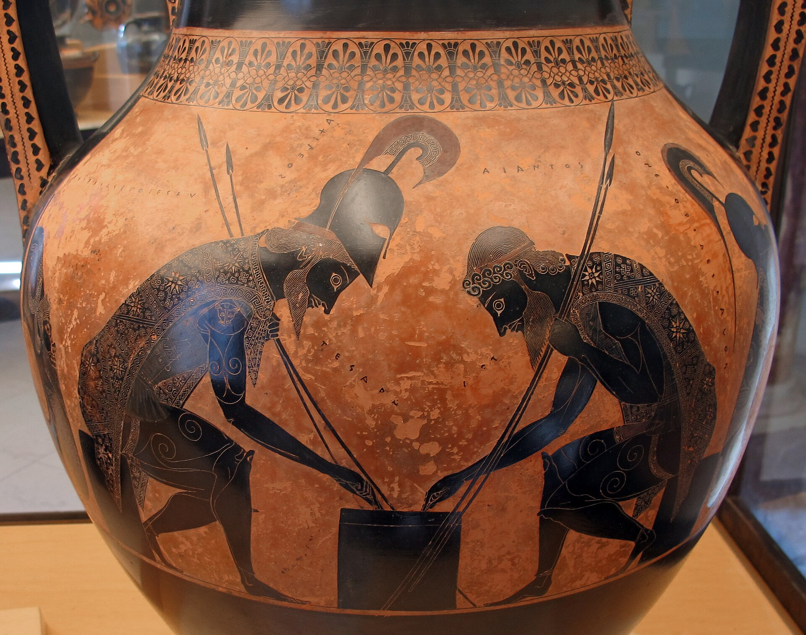

In the begining
The specifics of checker's origin are relitivly unknown. It is speculated that it began in ancient Mesopotamia and Egypt approximetly 3000BC.
Simular games were played by the greeks and romans, they were called Petteia and Latrunculi respectively.